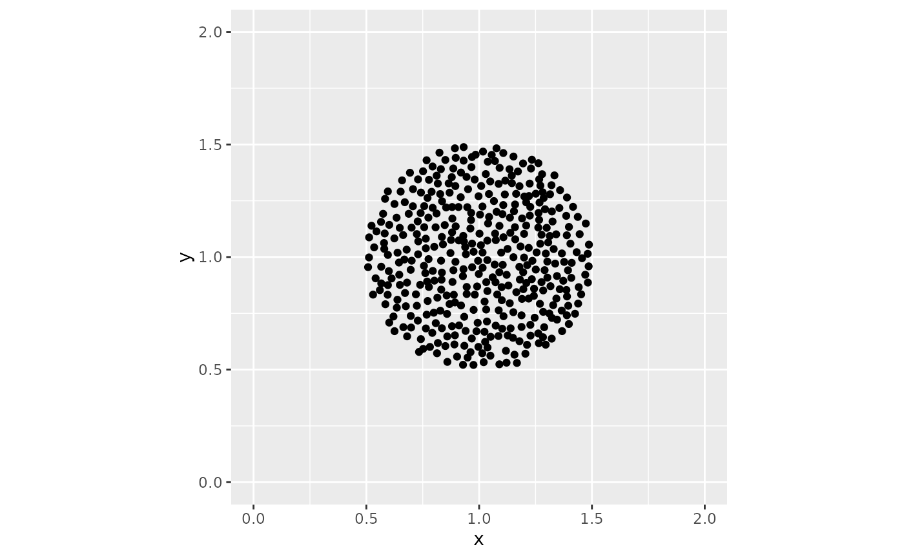
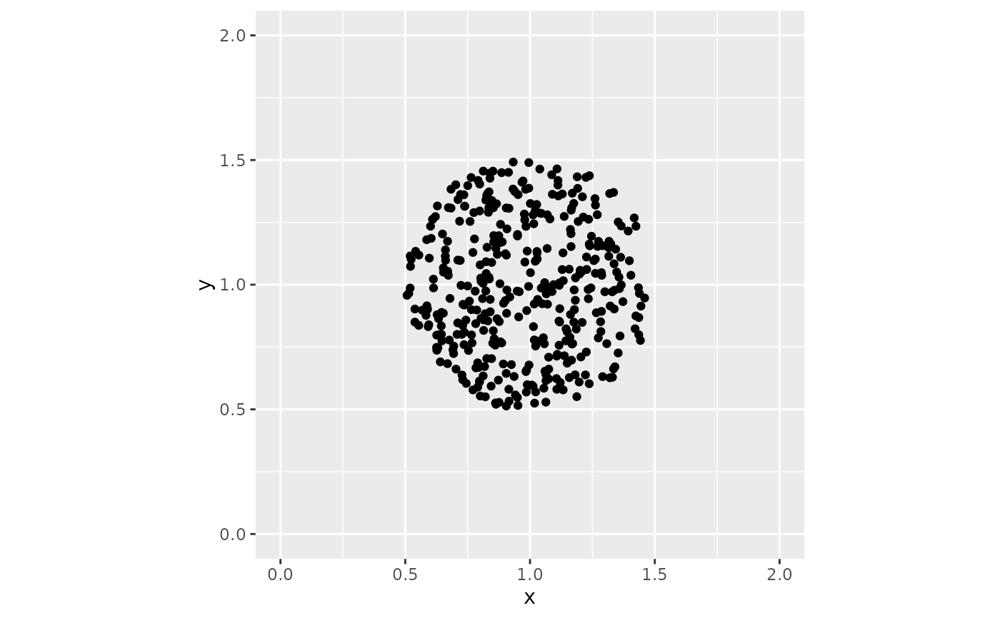

Scatter over-plotted points evenly at random
position_bluenoise.RdThis function spreads perfectly over-plotted points across an elliptical
field, like position_jitter_ellipse(), but places them so that no two land
much closer together than the rest. Sampling uniformly at random, which is
what jittering does, leaves visible knots and voids: in a draw of 200 points
the closest pair typically sits about a fifteenth of the median spacing
apart. A reader cannot tell those knots from real structure. The arrangement
here has the even spacing of position_sunflower() while still looking
unstructured, so no reader mistakes a spiral arm for a finding.
Arguments
- width, height
The dimensions of the elliptical field the points are spread across.
- candidates
The number of random draws considered for each point. Larger values space the points more evenly and take longer. The default of 10 is enough to remove essentially all of the clumping.
- seed
A random seed for reproducibility.
Details
The pattern is the one the eye's own photoreceptors are laid out in, known as
blue noise or a Poisson-disc distribution. It is produced by Mitchell's
best-candidate algorithm: each point is the best of candidates random draws,
where best means farthest from every point already placed.
Examples
library(ggplot2)
dat <- data.frame(x = rep(1, 400), y = rep(1, 400))
# Evenly scattered.
ggplot(dat, aes(x, y)) +
geom_point(position = position_bluenoise(width = 0.5, height = 0.5)) +
coord_equal(xlim = c(0, 2), ylim = c(0, 2))

# Uniformly jittered, for comparison. Note the knots and the gaps.
ggplot(dat, aes(x, y)) +
geom_point(position = position_jitter_ellipse(width = 0.5, height = 0.5)) +
coord_equal(xlim = c(0, 2), ylim = c(0, 2))
